Your Claude Code,
right beside you.
Standby is a Claude Code plugin that gives your session ears and a voice, on your Mac, while things are happening.
- Call it and brainstorm your ideas for hours, while it does the work.
- Bring it to meetings, on a call or in the room, and ask it anything.
- Dictate anywhere, with a high-quality speech model on your Mac that learns your words.
1Copy the link github.com/mksadoughi/standby/…/AGENT-GUIDE.md
2Give it to your Claude Code. It does the rest.
1In Terminal:
git clone https://github.com/mksadoughi/standby cd standby && ./install.sh
2Ask your Claude Code to call you or join your meeting. Or run /standby call or /standby listen yourself.
An Apple Silicon Mac with macOS 14 or later, Claude Code signed in, and a one-time download of about 4.5 GB.

- Same Claude sessionThe session you're already working in.Calls and meetings go to the Claude Code session you're already working in. It knows what you're doing, and remembers it afterwards.
- In Claude CodeNo new app to live in.No new app to live in. Everything works from your session; Standby's window and mini window are there only if you want them.
- Any meetingAny app or the room, with no bot.Any meeting app, a call in the browser, or people in the room. Nothing joins the call: Standby hears it from your Mac, and you approve what it hears.
- Stays on your MacAudio never leaves it.Speech-to-text, speaker labels and the voice run on your Mac. Your words go to your Claude Code as text, along with anything you paste or attach; Claude Code and its tools handle data their own way.
- No API keyRuns on your own Claude subscription.It runs through your own Claude Code and its subscription. There's no account or key to set up.
- FreeFree and open source.Free and open source, with nothing to pay per use. The code is on GitHub for anyone to read.
What it does
Built on Claude Code's plugins
Standby is a Claude Code plugin, not a separate app. It runs inside your own session, in the terminal, VS Code or the Claude app, with your CLAUDE.md, skills and tools.A plugin, not a separate app: it runs in your own session, in the terminal, VS Code or the Claude app.
Stays out of your way
Put a call away and it shrinks into the mini window in the corner of your screen, above every app. Click it to pause or resume; point at it for Full window, Settings and End. It never takes the keyboard from whatever you're typing in.Put a call away and it waits as a mini window in the corner, above every app. Click it to pause or resume.
Hears what you want it to
Your mic, any meeting app, a video, a phone on speaker, the people in the room: Standby hears them straight from your Mac, with no bot in the call. The meeting window shows each one, and you untick what you'd rather it didn't hear.Your mic, any meeting app, a video or the room, straight from your Mac, with no bot in the call. Untick any source you'd rather it didn't hear.
Knows who's who
It tells the voices apart and labels each line. Click a label to put a name on it; the name applies to the whole meeting, and Standby recognizes that voice in later meetings. It also learns your own voice from your calls, to tell you apart. Voice prints stay on your Mac; turn this off or forget them in Settings > Recording.It labels each speaker; name a voice once and it's known next time. Voice prints, yours too, stay on your Mac, and you can turn them off.
Learns your words
After a meeting, Claude lists the names and terms the speech model got wrong, and they join your word fixes. From then on, dictation and your transcripts get them right, with nothing for you to set up.Names and terms from your Claude Code projects, and your own corrections, become word fixes, so dictation gets them right.
Light on your plan
Standby is free, with nothing to pay per use: it runs through your own Claude subscription. Speech, speakers and the voice run on your Mac, and the call's quick replies use Haiku, the lightest model. A full day of calls took 1 to 2% of a Pro plan's week. Settings shows exactly what it used.Free, with nothing to pay per use: it runs on your own Claude subscription. A full day of calls took 1 to 2% of a Pro plan's week.
Questions
Will it drain my Claude plan?
Hardly, and there's nothing to pay per use: Standby is free, needs no API key, and goes through your own Claude Code and its subscription. Speech-to-text, speaker labels and the voice all run on your Mac. Claude gets your words as text, and conversation is a small amount of text. People speak two or three words a second. Even if you stayed on a call for a whole eight-hour workday and never stopped talking, everything said would come to around 100,000 tokens. That's about what Claude reads when it looks over a medium-sized codebase once. Most of it goes to Haiku, the smallest and lightest model. The heavier work you hand your session counts there, as usual. In the developer's own use, a full day of about ten calls took 1 to 2% of a $20 Pro plan's weekly limit, and Settings shows exactly what Standby used.
When does Claude see the meeting?
When you ask: the transcript goes with your question. Or, if you'd rather, as it goes.
What leaves my Mac?
Audio and voice prints never leave it. A meeting's transcript and what you say on a call go to your own Claude Code as text, along with anything you paste or attach; Claude Code and its tools handle data their own way. Deleting a meeting or call in Standby removes Standby's copies on your Mac, not what was already sent to Claude or exported.
What will macOS ask for?
Each permission the first time it's needed. The microphone on your first call or meeting. Screen & System Audio Recording for the first meeting that records your Mac's sound: that's how Standby hears the other side of a video call, and it takes the sound only, never the screen. Input Monitoring and Accessibility when you turn on dictation, to notice your dictation shortcut and type the text for you.
Can I record any meeting?
Tell people when you're transcribing, and follow the rules that apply to you. In many places everyone has to agree to being recorded.